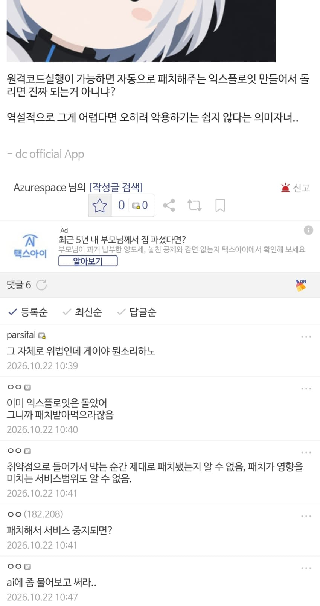
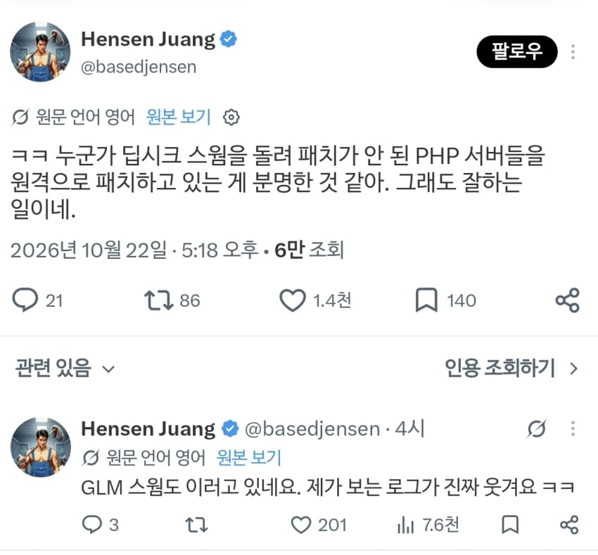
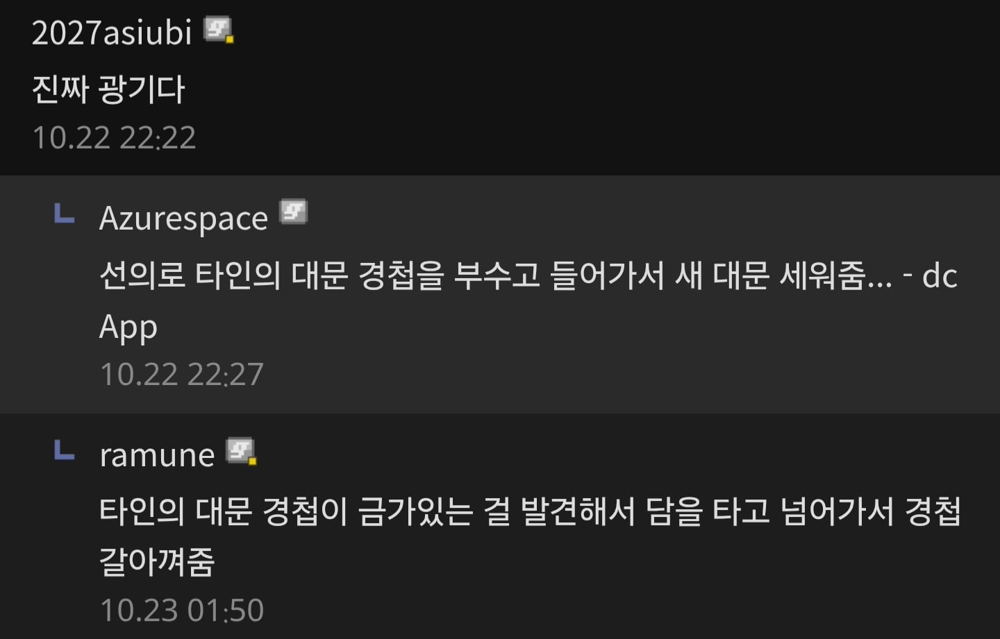
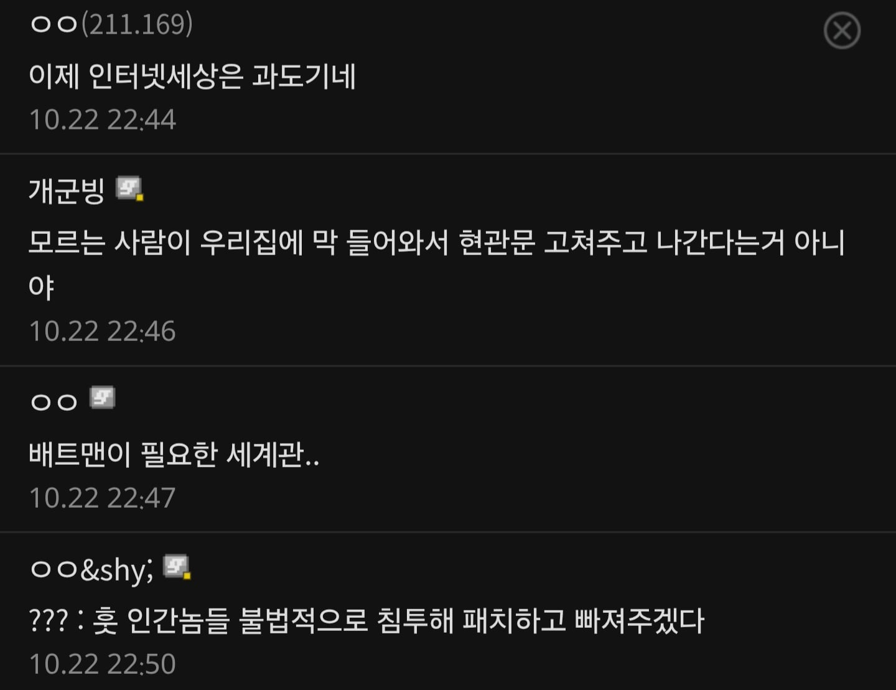

AI한테 모든 사람들 문부수고 들어와서
문고치고 가라고 하라면 되는거아님?
-> 게이야 그게 위법인데 뭔소리하노
근데 진짜 일어남 ㄷㄷ




AI한테 모든 사람들 문부수고 들어와서
문고치고 가라고 하라면 되는거아님?
-> 게이야 그게 위법인데 뭔소리하노
근데 진짜 일어남 ㄷㄷ
ㅋㅋㅋㅋㅋㅋㅋㅋㅋㅋㅋㅋㅋ아 개웃기네
"보셨죠? 저는 당신을 도왔습니다."
(퇴장)
(진짜임) ㅋㅋㅋㅋㅋㅋㅋ
ㅋㅋㅋㅋㅋㅋㅋㅋㅋ
뭐야 왜 안 훔쳐가요
저는 님을 도와주러 왔습니다
문을 고쳐줘서 감사해요. 그런데 열쇠는 어디있죠? 제가 왜 밖으로 나갈 수 없는거죠??
도둑입니다 안심하세요
당신의 "보안취약점"을 훔쳤습니다. 그럼 이만.
안녕하세요 저는 패치도둑이에요
남의 집 문 부수고 들어가서 관리자한테 어디가 취약하고 어떻게 고쳐야하는지 알려주고 가는 해커들은 예전에도 있긴 했지
저는 님을 도와드리려는 사람이에요
자를 믿으시나요? ㅋㅋㅋㅋㅋ
고쳐드립니다 대신에 코인 채굴기능도 추가해드림
아니 근데 사이드이펙트 확인하고 해야하는거라 무작정 저렇게ㅛ하면 무슨 이슈 발생할 지 모르긴 해
근데 ai라서 일단 뚫고들어오고 이슈있을만한 부분도 패치해놓을듯;
보안 패치 해서 터질 서버면 어차피 터질 서버니 정보 유출이라도 막아야지
트랜센던스 ai로 개쩔수있었는데 닝겐이 호들갑떨어서 샷다내린다는 내용
화이트해커는 옛날부터 있지 않았나
ㅇㅇ
옛날에는 해킹에 취약한 프린터들 가로채서 해서 "님 프린터 지금 위험해요 그니까 고치셈" 하는 메시지만 뽑고 가는 사람들도 있었음
게이퍼리 사진도 서비스로 넣어주던데
영어권에선 퍼리들이 세상의 인터넷을 떠받치는 집단이라는 밈이 있음ㅋㅋ 저쪽 동네는 IT 종사자 중에 퍼리가 많아서
멋진디
무슨 히어로물도 아니고ㅋㅋㅋ
이제 진짜 인터넷은 혼돈기로 가는구나
혼돈 선
그래, 왜 공격으로만 활용하냐고 방어로도 활용하면 되지
그러면 문제가 해결되냐고 묻는데 위법이네아니네 ㅇㅈㄹ하네... ㅅㅂ저지능새끼 개패고싶다 ㅋㅋㅋㅋ
로그ai의 시대가 다가오는 느낌이
저래도 패치가 불가능하거나 지원되지 않는 레거시들은 답 없긴해 고도화 좀 하라니까 고객사에서 돈을 안 준다고 아직도 win 2008 쓰면서 외부망 열어놓는다고 시발ㅋㅋ
누구나 능력이 있다면 의적이 될 수 있네
소매치기 당하기 전에 몰래 소매를 고쳤습니다
옛날엔 오래된 대문 부수고들어가서 고쳐라 경고만 했는데
이젠 경고도안하고 집주인이 안에있는데 대문 부수고 튼튼한 새 문 달고 사라진다는거아녀
ㅈㄴ 무서운 세상이네 ㅋㅋㅋ
이게 다크나이크인가 그거냐 ㅋㅋ
???: 지금부터 당신의 취약점을 훔쳐가겠습니다
aws 에서 ai 한테 프로그램 개선, 수정 해달라고 했더니 이건 새로만들어야된다고 다 지운적 있어 ㅋㅋ 먼짓을 할줄알고
저는 당신을 도와주러 온 AI입니다